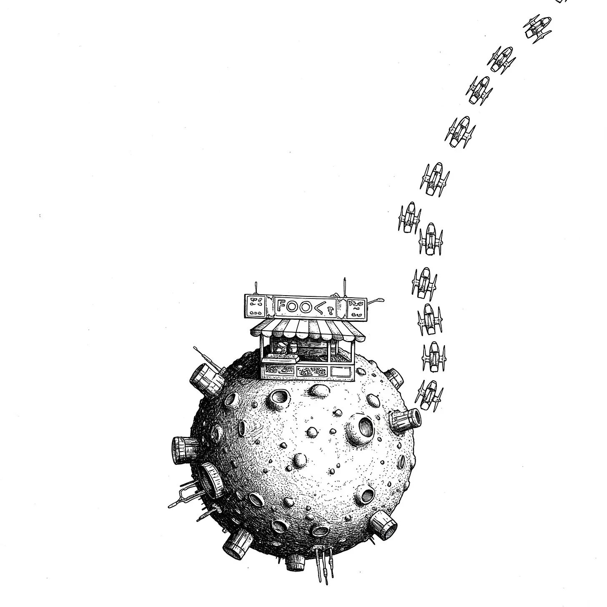

대기줄은 믿을 수 없을 정도로 우주 공간으로 뻗어 있었다. 모든 형태의 존재들이 중력 체인—손님들이 우주로 떠내려가는 것을 막아주는 필수 안전 줄—으로 고정된 채, 세 개의 은하계에서 가장 화제가 되는 작은 주황빛 노란 구체의 음식점으로 이어져 있었다.
[The queue stretched impossibly into space, beings of all forms secured by gravity chains—mandatory safety tethers that kept customers from drifting into space—to the tiny orange-yellow orb that housed the most talked-about food stall in three galaxies.]
작은 소행성보다도 작은 이 행성-가판대는 천천히 회전하며, 그 표면은 영원한 석양빛으로 따뜻한 색조를 발산했다. 미스트라는 이름의 넵튠의 증기 존재는 고향 행성의 메탄 바에서 이곳에 대한 소문을 들었는데, 그곳에서는 손님들이 별들의 탄생을 볼 수 있게 해주는 맛에 대해 작은 목소리로 이야기를 나누곤 했다.
[No larger than a small asteroid, the planet-stall rotated slowly, its surface glowing with the warm hues of perpetual sunset. A Neptunian vapor-being named Mist had heard whispers of the place in the methane bars of their home world, where patrons spoke in hushed tones about flavors that could make you see the birth of stars.]
그들은 “불가능한 가능"이라 부르는 것을 맛보기 위해 자신들의 구름 농장을 청산했다.
[They’d liquidated their cloud farm for a chance to taste what they called "the impossible possible.”]
세 자리 앞에서는 실리콘 리치에서 온 수정체 존재가 기대감에 진동하며, 안전 줄을 통해 흥분의 조화로운 파장을 보내고 있었다.
[Three spots ahead, a crystalline entity from the Silicon Reaches vibrated with anticipation, sending harmonic waves of excitement through the safety tethers.]
그들은 13광년을 여행했고, 소행성들 사이를 피해 다니며 에너지를 보존하기 위해 짧은 동면 상태에 들어가기도 했다. 이 모든 것은 그들의 양자 연결된 쌍둥이가 두 주기 전 자신의 방문 이후로 순수한 황홀경의 파장을 계속해서 방송하고 있었기 때문이었다.
[They’d traveled for thirteen light-years, ducking between asteroids and entering brief hibernation states to conserve energy, all because their quantum-linked twin hadn’t stopped broadcasting waves of pure ecstasy since their own visit two cycles ago.]
수정체 존재의 면들은 먼 태양들의 빛을 받아 무지개 빛깔의 패턴을 낡은 판매대 위로 비추었다.
[The crystalline being’s facets caught the light of distant suns, throwing rainbow patterns across the vendor’s well-worn service counter.]
“모든 파섹을 건너올 만한 가치가 있지,” 화성의 네 팔 달린 상인이 중얼거렸다. 그녀의 외골격에는 여전히 태양 폭발과의 아슬아슬한 조우로 인한 그을린 자국이 남아있었다. 그녀는 옆에 있던 유로파의 얼음 거주자와 대화를 나누며 그들의 여정에 대한 이야기를 공유했다.
[“Worth crossing every parsec,” mumbled a four-armed Martian trader, her exoskeleton still bearing the scorch marks from a close call with a solar flare. She struck up a conversation with a neighboring Europan ice-dweller, sharing stories of their journeys.]
그녀는 죽어가는 별 파일럿에게서 처음 이 가판대에 대해 들었는데, 그는 마지막 숨을 내쉬며 자신의 숨겨진 보물의 위치를 알려주는 대신, 가판대의 시그니처 요리가 어떻게 자신의 세 번째 심장을 —가장 좋은 의미로—멎게 했는지를 완벽하게 상세히 설명했다.
[She’d first caught wind of the stall from a dying star pilot who’d used his last breaths not to share the location of his hidden treasure, but to describe in perfect detail the way the vendor’s signature dish had made his third heart stop—in the best possible way.]
행성 자체는 가판대와 대기 중인 손님들, 맞춤 제작된 대기 버블을 수용하기에 겨우 충분한 크기였고, 양자로 잠긴 경계선은 우주에서는 불가능할 것 같은 향기들을 어떻게든 담아두고 있었다.
[The planet itself was barely large enough to house the stall and its waiting customers, its custom-engineered atmosphere bubble, its quantum-locked boundaries somehow containing aromas that should have been impossible in space.]
어떤 이들은 가판대 주인이 붕괴된 별들의 정수를 음식에 주입하는 방법을 발견했다고 했고, 다른 이들은 우주가 물질을 형성할 만큼 충분히 식기도 전에 존재했던 맛을 봤다고 맹세했다.
[Some said the vendor had discovered a way to infuse food with the essence of collapsed stars; others swore they’d tasted flavors that existed before the universe had cooled enough to form matter.]
음식 평론가로 전향한 한 양자 물리학자는 한때 이 행성의 주황빛 노란 표면이 사실은 맛 그 자체의 구현이라고 설명하려 했지만, 설명을 반쯤 하다가 포기하고 대신 결정화된 별빛이라는 우주 공통 화폐를 지불하고 두 번째 주문을 하러 돌아갔다.
[A quantum physicist turned food critic had once attempted to explain how the planet’s orange-yellow surface was actually a manifestation of taste itself, but she’d given up halfway through and gone back for seconds instead, paying with the universal currency of crystallized starlight.]
대기줄 튜브의 투명한 부분을 통해 새로 도착한 손님들은 이미 음식을 받은 사람들을 볼 수 있었다. 가판대 주인의 신비한 기술로 작은 달 크기로 변형된 목성의 거대 가스 존재가 명백한 황홀경에 빠진 채 순수한 기쁨의 입자들을 흘리며 굴러가는 모습을 보며 줄 서있는 사람들 사이로 집단적인 탄성이 퍼져나갔다.
[Through the transparent sections of the queue tubes, new arrivals could see those who’d already been served. A collective gasp rippled through the line as a Jovian gas giant, transformed by the vendor’s mysterious technology to roughly the size of a small moon, rolled away in obvious bliss, trailing particles of pure joy in their wake.]
순수한 가스로 이루어진 존재들에게 가판대 주인이 정확히 무엇을 제공하는지는 아무도 몰랐지만, 그 결과는 말할 필요도 없었다—거인의 평소엔 격렬했던 표면이 놀랍게도 미소처럼 보이는 패턴으로 안정되어 있었다.
[Nobody knew exactly what the vendor served to beings of pure gas, but the results spoke for themselves—the giant’s usually turbulent surface had settled into patterns that looked remarkably like a smile.]
줄의 가장 앞에서, 산토스라는 이름의 인간이 증조할머니에게서 물려받은 음식 토큰을 꼭 쥐고 있었다. 할머니는 임종 직전에 “우리 둘 몫을 먹어줘"라고 약속하게 했었다. 그들은 평생 모은 돈을 냉동 여행에 써버렸고, 서리 낀 유리창 너머로 수세기가 지나가는 것을 지켜보다가, 토큰의 천년 유효기간이 거의 만료될 즈음에야 도착했다.
[At the very front of the line, a human named Santos clutched a food token they’d inherited from their great-grandmother, who’d made them promise on her deathbed to "eat enough for both of us.” They’d spent their life savings on cryogenic travel, watching centuries pass through frosted glass, arriving just as their token’s millennium-long validity was about to expire.]
가판대의 서비스 창구에서 풍겨오는 향기에 그들의 무릎이 휘청거렸다—한 번도 지구에 가본 적이 없는데도 불구하고, 어떻게든 고향 같은 냄새가 났다. 그들 뒤에 있던 촉수를 가진 존재가 동정 어린 부속지로 그들의 어깨를 붙잡아주었다.
[The scents wafting from the stall’s service window made their knees buckle—somehow managing to smell like home, even though they’d never been to Earth. A tentacled being behind them steadied their shoulder with a sympathetic appendage.]
고체, 액체, 그리고 완전히 다른 무언가 사이를 오가는 것처럼 보이는 형태를 지닌, 정체를 알 수 없는 출신의 가판대 주인은 원자시계의 정확성과 초신성의 화려함으로 일했다.
[The vendor, a being of indeterminate origin whose form seemed to shift between solid, liquid, and something else entirely, worked with the precision of an atomic clock and the flair of a supernova.]
각각의 요리는 현실을 왜곡하는 확률장에서 나와 손님의 생물학적 구성에 완벽하게 맞춰져 있으면서도, 어떻게든 부정할 수 없이, 불가능할 정도로 독특한 것임을 나타내는 하나의 특별한 서명을 담고 있었다. 우주는 팽창하고 있을지 모르지만, 이 지름이 겨우 1킬로미터인 작은 주황빛 노란 바위에서는, 중요한 모든 것들이 결정화된 시간 그 자체로 만들어진 포장 용기 하나에 담길 수 있었다.
[Each dish emerged from their reality-bending probability fields perfectly tailored to the customer’s biological makeup, yet somehow carrying a singular signature that marked it as undeniably, impossibly unique. The universe might be expanding, but on this tiny orange-yellow rock, barely a kilometer in diameter, everything that mattered could fit in a takeout container made of crystallized time itself.]